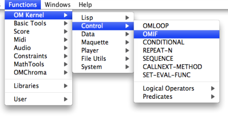
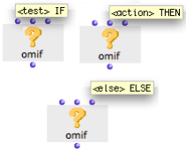
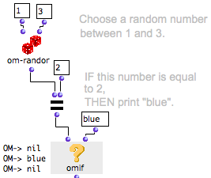
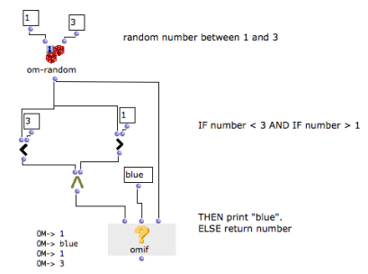

OpenMusic DocumentationHiérarchie de section : OM 6.6 User Manual > Visual Programming II > Control Structures > Conditional Operators > OMif
OpenMusic DocumentationHiérarchie de section : OM 6.6 User Manual > Visual Programming II > Control Structures > Conditional Operators > OMif
Navigation : page précédente | page suivante
Attention, votre navigateur ne supporte pas le javascript ou celui-ci à été désactivé. Certaines fonctionnalités de ce guide sont restreintes.
OMif : If, Then, Else
The behaviour of omif can be described by the following proposition : "IF the A condition is verified, THEN execute the B operation, ELSE execute the C operation".
The omif box can be accessed via the Functions / Kernel / Control / OMIF menu (or typing "OMIF" in the patch window).

Box Inputs

|
Omif has two default inputs and one optional input :
Each input accepts a function, a factory, or a data box. |
To add or delete the optional "else" argument : press Alt +← or → / SHIFT + > or <.
Behaviour
"Test" evaluates the box it is connected to and checks if a number of conditions for the operation are fulfilled.
- If the box yields something else than "nil", the conditional test is verified, and " then" evaluates the box connected to its second input.
- It the box yields "nil", OMIF returns the same "nil" value.
Omif is evaluated like any other box, and returns the value yielded by "then" or "else".
Example : IF, THEN
Here, "test" evaluates the om= predicate, which checks if the value returned by om-random is equal to 2.
|

|
Here, "test" is determined by the om= predicate, but it can also be connected to any other type of box.
For Full Information about Predicates :
Example : IF, THEN, ELSE
In this example, "else" has been added to OMIF. If the condition is not fulfilled, OMIF doesn't return "nil", but the random number.

Adding Optional Arguments
Références :
Plan :
Navigation : page précédente | page suivante
A propos...(c) Ircam - Centre Pompidou